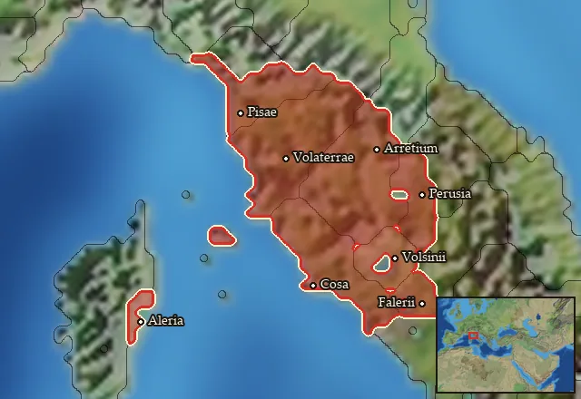

RTR: Imperium Surrectum
RTR: Imperium SurrectumEtruscan Elite Swordsmen
{kind=link}
Class: heavy · Category: infantry · Men per unit: 40
Stats
| Rank in roster | Rank in roster | Rank in roster | ||||||
|---|---|---|---|---|---|---|---|---|
| Men per unit | 40 | ███······· 28% | Attack | 14 | ███████··· 72% | Charge bonus | 13 | █████····· 53% |
| Defence | 44 | █████████· 85% | · armour | 11 | ███████··· 66% | · defence skill | 28 | █████████· 86% |
| · shield | 5 | ██████···· 58% | Morale | 14 | ████████·· 79% | Discipline | normal | |
| Training | highly_trained | Recruitment cost | 2,094 dn | █████····· 53% | Upkeep per turn | 766 dn | ███████··· 74% | |
| Turns to recruit | 4 |
Weapons
| Primary | Secondary | Primary | Secondary | Primary | Secondary | Primary | Secondary | ||||
|---|---|---|---|---|---|---|---|---|---|---|---|
| Attack | 14 | 12 | Charge bonus | 13 | 15 | Type | thrown · blade | melee · blade | Damage | piercing | piercing |
| Projectile | pilum_early | — | Range | 40 | — | Ammunition | 2 | — | Attributes | ap · prec | — |
| Min delay between blows | 25 | 25 |
Defence
| Primary | Secondary | Primary | Secondary | Primary | Secondary | Primary | Secondary | ||||
|---|---|---|---|---|---|---|---|---|---|---|---|
| Total | 44 | — | Armour | 11 | — | Defence skill | 28 | — | Shield | 5 | — |
| Material | metal | — |
Condition, terrain and upkeep
| Hit points | 1 · mount 6 | Ground: scrub / sand / forest / snow | 0 / -1 / 0 / -1 | Heat penalty | 3 | Charge distance | 30 |
| Fire delay | 0 | Food consumed (low / high) | 60 / 300 | Mass per man | 1.3 | Formation: close / loose | 1 x 1.2 / 2 x 2.4 · 5 ranks · square |
| Men per unit | 40 as the unit file states — the game multiplies this by your unit size |
In battle: Can sap · Good stamina
The full attribute list (4)
sea_faring, hide_forest, can_sap, hardy
Who can recruit it
A core roster unit for one faction, which can raise it anywhere it holds the right building:
Any faction holding one of the provinces below can field it.
Exactly what a settlement must have, route by route (3)
| Building | Also requires | Building | Also requires | Building | Also requires | ||
|---|---|---|---|---|---|---|---|
| Direct Rule | Tier 3 Military Industrial Complex · Tier 2 Colony | Homeland | Tier 2 Military Industrial Complex | Region Information Scroll | Tier 2 Military Industrial Complex · Etruscan area of recruitment · Dependency only | Tier 1 Colony not built |
Areas of recruitment

| Zone | Provinces | ||||||
|---|---|---|---|---|---|---|---|
| Etruscan | 8 |
Description
"The Etruscans, thinking of nothing but their numbers, on which they solely relied, came on with such eager impetuosity that they flung away their javelins in order to come more quickly to a hand-to-hand fight, and rushed upon their foe with drawn swords” – Livy (History of Rome 9.35.3), the start of the Battle of Lake Vadimo (310 BC)
Called into service by their city-state, these wealthy Etruscan aristocrats and their retainers have eagerly respond to the call, as true sons of Etruria never fail to do. By the goddess Nortia, which they devoutly honour, they shall protect their lands and show their enemies that they are the strongest warriors that the Etruscan city-states can put in the field. Equipped with the finest panoplies available in Central Italy, these men wear scale armour, muscle cuirasses, or scale-reinforced linen armour (linothorakes) paired with bronze greaves on each leg and crested Attic-Phrygian, Chalcidian, or Montefortino helmets. For defence, they carry large thureos shields, beautifully painted with local symbols and designs. In combat, they open engagements with heavy javelins before closing in to a devastating hand-to-hand fight using their double-edged swords (xiphoi) or curved cutting blades (machairai). As the most formidable infantry unit in the Etruscan army, their high morale, heavy armour, and great skill in battle allows them to hold their ground with ease and to overcome any enemy infantry unit that is thrown at them. The bravest among the brave, they are vicious fighters, well-armed and extremely capable in combat. Commanders can truly rely on them to win the day, as regardless of the odds at play against them, these men will fight to end, be it victory or an early encounter with the gods.
Historical background
The Etruscan military organization was based on a highly stratified social structure dominated by wealthy aristocratic families and their personal retainers. The structure of their forces was historically organized around census classes that linked military equipment to wealth, similar to the early Roman Republic. In the Servian centuriate order, recorded by Dionysius of Halicarnassus (4.16.3) and Livy (1.43.4), the wealthiest class, those rated at 100,000 asses or 100 minae, was required to furnish complete personal armour, including bronze helmets, cuirasses, greaves, swords, and heavy shields.
Modern scholarship on Middle Republican military iconography emphasizes that the Etruscan aristocracy deliberately used Hellenistic equipment as a tool of social (the wealthy elites vs the common soldier) and ethnic distinction (Etruscans vs Romans and/or Celts). While common infantry depicted on cheaper Etruscan votive bronzes adapted to and used Roman equipment, the Etruscan aristocracy portrayed on expensive cinerary urns and votive bronzes maintained an ostentatious "Hellenic alterity" (Taylor, 'Etruscan Identity and Service in the Roman Army: 300–100 B.C.E.', in: AJA 121-2 (2017), p. 287).
Indeed, Taylor tells us that "most Etruscan art, including elaborately decorated funerary urns, was produced for the upper stratum of Etruscan society. The combatants in those scenes consistently maintain a Hellenic kit, wearing linen corselets or muscle cuirasses" (Taylor (2017), pp. 280-281). During the massive Gallic invasion of Central Italy in 225–222 BC the Etruscans and Romans cooperated in a joint defence against these barbarians and stopped them in Etruria. This invasion was captured in the Etruscan artwork, with both the cavalry and infantry wearing an elaborate Hellenic kit, with linen or scale cuirasses, Greek-style helmets, and round aspis shields. As per Taylor, this indicates that the “culturally sophisticated Etruscan elite appear to have embraced a martial aesthetic that was explicitly Hellenic rather than reflecting the Roman troops alongside whom they had engaged in frequent combat against Celtic peoples across northern Italy and even in defence of Etruria itself. Class pretension, along with accompanying aesthetic conservatism, must be the decisive factor: the Etruscan elite celebrated their superior status through an ostentatious embracing of Greek culture and thus decorated their urns with hellenizing Celtomachies” (Taylor (2017), p. 280-281).
A major element highlighting this elite status is a 3rd-century BC bronze votive warrior figurine housed in the Walters Art Museum (inv. 54.1074). As Taylor (2017, p. 283) observes: "The lamellar armour is a marker of both ethnicity and class; the soldier displays an element of the classical Etruscan panoply, not the mail shirt of the Roman legionary, and still is characterized as wealthy enough to afford such an elaborately wrought cuirass". Similarly, mural paintings in the François Tomb (c. 330 B.C.E) (Francois Tomb, National Etruscan Museum at Villa Giulia) and the Giglioli Tomb at Tarquinia depict heroes armed in elaborate scale-reinforced linothorakes, breastplates, javelins, and machaira swords.
The military potential and political volatility of this landed aristocracy remained a major concern for Rome during the Hannibalic War. Widespread unrest that surfaced across Etruscan cities like Arretium between 209 and 204 BC. The Roman Senate feared that Etruscan senators might secede or defect to Hannibal, prompting Rome to send Gaius Terentius Varro to seize the sons of Etruscan aristocrats as "hostages for their good behaviour" while permanently stationing two Roman legions in Etruria to guarantee control (Van Son, The Disturbances in Etruria During the Second Punic War (1963), p. 267-274). Livy wonderfully narrates those events, in which unrest in Etruria and a possible call to arms against Rome was in play, but was carefully prevented from rising due to quick military action by Rome: “Day by day the reports from Arretium became more serious and caused increasing anxiety to the senate. Written instructions were sent to C. Hostilius, bidding him lose no time in taking hostages from the townspeople, and C. Terentius Varro was sent with powers to receive them from him and conduct them to Rome. As soon as he arrived, Hostilius ordered one of his legions which was encamped before the city to enter it in military order, and he then disposed the men in suitable positions. This done, he summoned the senators into the forum and ordered them to give hostages for their good behaviour. They asked for forty-eight hours for consideration, but he insisted upon their producing the hostages at once and threatened in case of refusal to seize all their children the next day. He then issued orders to the military tribunes and prefects of allies and centurions to keep a strict watch on the gates, and to allow no one to leave the city during the night. There was too much slackness and delay in carrying out these instructions; before the guards were posted at the gates seven of the principal senators with their children slipped out before it was dark’’ (Liv, 27.24).
In this story, several moments of tension can be observed. First, some of the main Etruscan families escaped and thus avoided giving their children as hostages to Rome, despite losing their properties. Later, C. Terentius arrived with a second legion and requested the gate keys. The Etruscan magistrates hid them from him, showing another moment of resistance towards Rome, although they certainly could not do much more since two Roman legions, approximately 10,000 soldiers, were now stationed in Arretium. In any case, Terentius warns "that all hope of Etruria remaining quiet depended upon his taking such precautions as to make any movement of disaffection impossible” (Liv, 27.24).